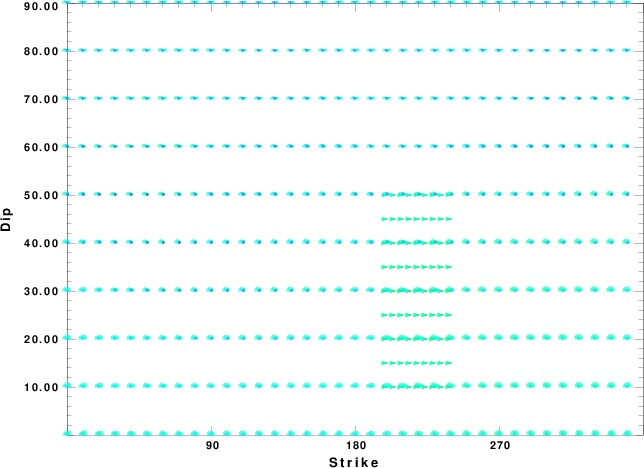

The focal mechanism was determined using broadband seismic waveforms. The location of the event and the and stations used for the waveform inversion are shown in the next figure.
|
|
|
|
The program wvfgrd96 was used with good traces observed at short distance to determine the focal mechanism, depth and seismic moment. This technique requires a high quality signal and well determined velocity model for the Green functions. To the extent that these are the quality data, this type of mechanism should be preferred over the radiation pattern technique which requires the separate step of defining the pressure and tension quadrants and the correct strike.
The observed and predicted traces are filtered using the following gsac commands:
cut o DIST/3.3 -40 o DIST/3.3 +50 rtr taper w 0.1 hp c 0.03 n 3 lp c 0.10 n 3The results of this grid search from 0.5 to 19 km depth are as follow:
DEPTH STK DIP RAKE MW FIT
WVFGRD96 1.0 225 15 90 3.94 0.3003
WVFGRD96 2.0 50 5 90 3.94 0.3374
WVFGRD96 3.0 40 5 80 3.88 0.3516
WVFGRD96 4.0 10 5 35 3.84 0.3530
WVFGRD96 5.0 295 5 -40 3.82 0.3503
WVFGRD96 6.0 250 10 -85 3.82 0.3507
WVFGRD96 7.0 230 20 -95 3.84 0.3495
WVFGRD96 8.0 215 30 -95 3.88 0.3530
WVFGRD96 9.0 35 55 -90 3.90 0.3518
WVFGRD96 10.0 35 60 -90 3.90 0.3336
WVFGRD96 11.0 30 55 -95 3.91 0.3256
WVFGRD96 12.0 30 55 -95 3.91 0.3148
WVFGRD96 13.0 220 35 -85 3.90 0.3013
WVFGRD96 14.0 220 35 -85 3.90 0.2862
WVFGRD96 15.0 220 40 -80 3.90 0.2706
WVFGRD96 16.0 220 40 -80 3.90 0.2559
WVFGRD96 17.0 225 45 -80 3.90 0.2426
WVFGRD96 18.0 225 50 -80 3.90 0.2304
WVFGRD96 19.0 225 50 -80 3.91 0.2180
WVFGRD96 20.0 225 50 -80 3.93 0.2004
WVFGRD96 21.0 225 50 -80 3.93 0.1904
WVFGRD96 22.0 225 50 -80 3.93 0.1804
WVFGRD96 23.0 220 30 -80 3.94 0.1716
WVFGRD96 24.0 220 30 -80 3.94 0.1640
WVFGRD96 25.0 220 30 -80 3.94 0.1565
WVFGRD96 26.0 220 30 -80 3.95 0.1493
WVFGRD96 27.0 220 30 -80 3.95 0.1423
WVFGRD96 28.0 220 30 -80 3.95 0.1358
WVFGRD96 29.0 220 30 -80 3.96 0.1296
The best solution is
WVFGRD96 8.0 215 30 -95 3.88 0.3530
The mechanism correspond to the best fit is

|
|
|
The best fit as a function of depth is given in the following figure:

|
|
|
The comparison of the observed and predicted waveforms is given in the next figure. The red traces are the observed and the blue are the predicted. Each observed-predicted component is plotted to the same scale and peak amplitudes are indicated by the numbers to the left of each trace. A pair of numbers is given in black at the right of each predicted traces. The upper number it the time shift required for maximum correlation between the observed and predicted traces. This time shift is required because the synthetics are not computed at exactly the same distance as the observed and because the velocity model used in the predictions may not be perfect. A positive time shift indicates that the prediction is too fast and should be delayed to match the observed trace (shift to the right in this figure). A negative value indicates that the prediction is too slow. The lower number gives the percentage of variance reduction to characterize the individual goodness of fit (100% indicates a perfect fit).
The bandpass filter used in the processing and for the display was
cut o DIST/3.3 -40 o DIST/3.3 +50 rtr taper w 0.1 hp c 0.03 n 3 lp c 0.10 n 3

|
|
|
|  |
| Focal mechanism sensitivity at the preferred depth. The red color indicates a very good fit to thewavefroms. Each solution is plotted as a vector at a given value of strike and dip with the angle of the vector representing the rake angle, measured, with respect to the upward vertical (N) in the figure. |
A check on the assumed source location is possible by looking at the time shifts between the observed and predicted traces. The time shifts for waveform matching arise for several reasons:
Time_shift = A + B cos Azimuth + C Sin Azimuth
The time shifts for this inversion lead to the next figure:

The derived shift in origin time and epicentral coordinates are given at the bottom of the figure.